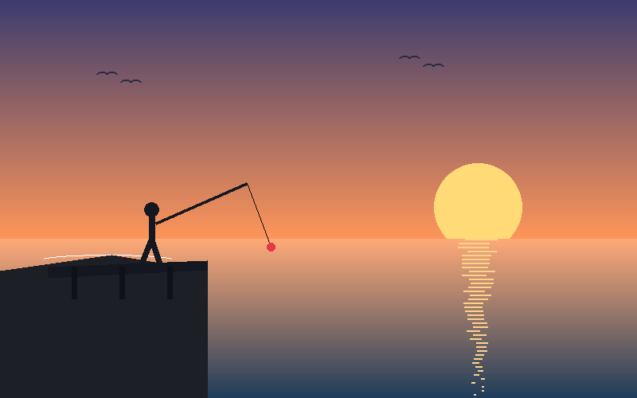
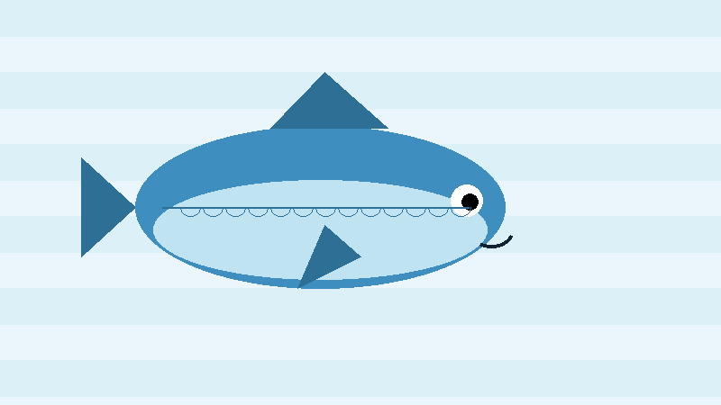

Fishing is a fun hobby that a lot of people enjoy, and freshwater fishing is a good place to start if you are new. Lakes, rivers, and ponds are usually easy to find and get to. A lot of them have fish that are easy for a beginner to catch. It is also just a relaxing way to spend time outside with your family or friends.
You do not need expensive gear to start fishing. A rod, a reel, some hooks, and a little bit of bait are enough to catch your first fish. The more you go, the more you start to notice things, like what bait works best or what time of day the fish are biting. Talking to other anglers or reading local fishing reports can help you learn faster too. Most people end up with a favorite spot to fish and a favorite fish they like to catch.


| Species | Typical Habitat | Best Bait |
|---|---|---|
| Largemouth Bass | Weedy lakes and slow rivers | Plastic worms, spinnerbaits |
| Rainbow Trout | Cold, clear streams and lakes | Live worms, small spinners |
| Channel Catfish | Muddy rivers and reservoirs | Chicken liver, stink bait |
These two sites are great places to keep learning after you finish reading this page: